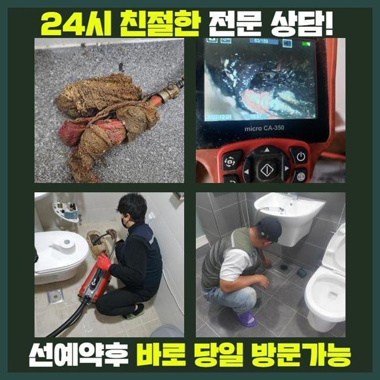
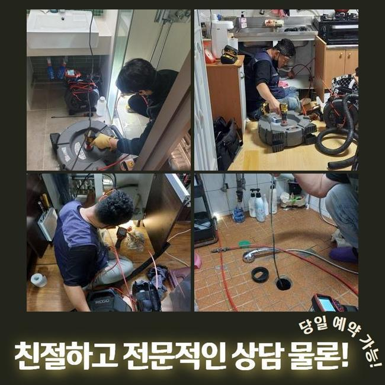
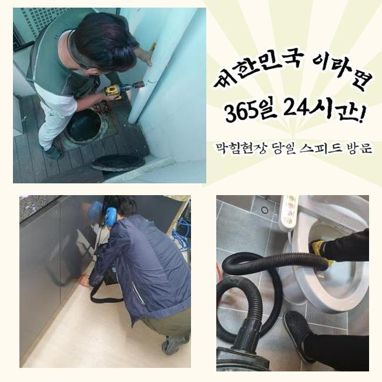
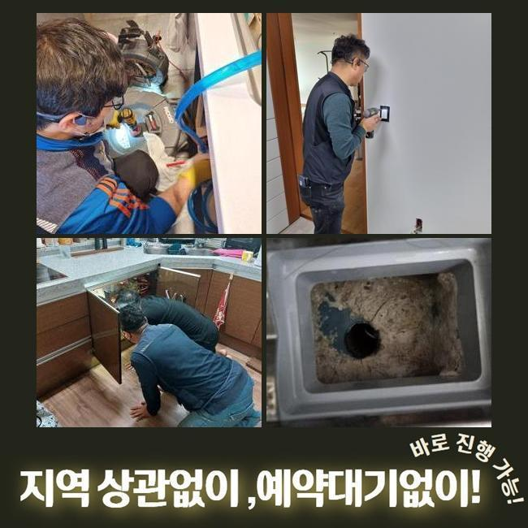
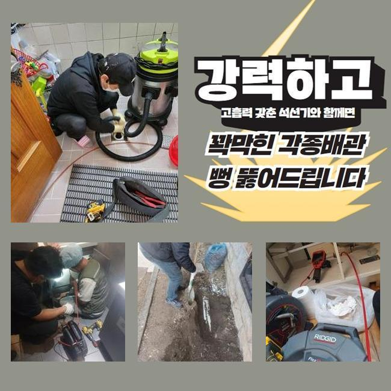

🏠 고양시 원당동화장실바닥막힘 강매동 배수로뚫기 배관막힘누수업체
고양 하수구막힘 전문 시공 후기

📋 작업 개요
- 위치: 고양
- 서비스 유형: 하수구막힘, 배관막힘, 누수수리, 역류해결, 뚫는업체, 배관청소
- 작업 일시: 2024. 12. 23. 10:25
- 업체명: 하수구수사대 (010-5615-2118)
🔍 문제 상황
고양시 원당동화장실바닥막힘 강매동 배수로뚫기 배관막힘누수업체
어제 저녁에 의뢰인께 다급한 의뢰를 받아서 알려주신 주소지로 달려갔습니다
고객분께서 난감한 상황때문에 도움을 요청하셨고 저희 전문진은 신속정확하게 전문 기기를 챙겨서 현장에 도착했어요
배수구가 막힌 경우에 의뢰인께 매우 불편한 상황이 일어나므로 이러한 문제점을 조속히 처리하는게 가장 중요합니다
긴급하게 주소지로 향하여 일단 문제가 발생한 곳을 살펴봤어요
하수라인 막힘문제는 세탁기기를 사용하는 다용도실에서 발생 되었는데 정상적으로 하수가 배출되지 않았고 거꾸로 올라오고 있있어요
고객분께서는 하수라인이 반복적으로 막히는 상황을 고쳐보고자 이런 저런 방법들을 해봤지만 전혀 도움이 되질 못했고 결국엔 세탁을 할 수 없는 지경까지 와버렸다고 고민을 털어놓으셨어요
고객분들 자체적으로 하수설비가 고장난걸 처리해보려고 시중에서 팔고있는 간단한 약제등을 사용 해보시겠지만 막힘사고를 야기시키는 원인을 찾아내서 처리할 수 없습니다

🔎 원인 분석
💡 전문가 진단: 정밀 진단 장비를 사용하여 슬러지의 고착 여부를 판명하고 타격/세척 작업을 실시했습니다.
하수시설은 오래될수록 노폐물등이 쌓여서 문제가 생기기때문에 이상이 생긴 부위를 확인하고 작업을 진행해야 합니다
우선 하수관의 내부와 외부 배관 확인을 해봤습니다
배수관 막힘사고를 정확하게 판단하려면 내부상황은 물론 외부로 나있는 배수관도 살펴보아야해요
배수구는 집에서 사용한 물들을 밖으로 내려보내는 형태라서 막힘을 발생시키는 원인점이 안쪽의 배수관에 있는 것인지 바깥쪽인지 점검해야 합니다
전체적으로 확인해보니 밖으로 난 하수관에 침전물이 쌓여서 하수가 원활하게 배출되지 않았어요
외부 배관쪽에서 문제점을 처리하기 위해서는 내부쪽과 외부쪽의 하수라인을 한번에 시공합니다
내시경기를 사용해서 하수라인 내부를 자세하게 체크합니다
내시경기기로 하수라인 내벽에 두껍게 층을 이룬 슬러지가 배수라인을 완전히 막고있는 상황을 볼 수 있었어요

🔧 작업 과정
샤프트기계를 활용해서 하수관에 가득한 노폐물을 제거하는 작업을 진행했어요
샤프트장치는 체인이 돌아가는 파워를 이용하여 이물질들을 빠르게 처리하는 장비로 하수관에 달라붙은 단단하게 변형 되어버린 오염물질을 분쇄하여 내보내는 장비예요
샤프트기기는 배수라인 안쪽의 침전물을 분쇄하고 배관 속을 깔끔하게 청소해요
하수라인이 막혀있는 정도가 꽤 심한 편이라서 전문 기술진들이 오랜시간을 들여 하수관 내벽에 달라붙은 이물질들을 완전하게 처리했어요
머리카락과 같은 오염물질은 시간이 지날수록 배수구에 쌓이면서 하수가 흘러가는 길을 막기때문에 이처럼 이물질들이 안쌓이게끔 미리 예방하는 것이 좋아요
내부 배관에서 빼냈던 불순물들이 다시 하수관으로 내려가지 않도록 걸러내서 따로 처리하고 하수관을 다시 확인합니다
오늘 현장에선 딱딱하게 변형된 침전물이 배수라인을 막고 역류현상을 일으키고 있었지만 작업을 끝내고 내시경기기를 통해서 전체적인 배수라인이 깔끔해진걸 확인하고 마무리 지었습니다
마지막 마무리까지 다하고 물을 틀어 계속적으로 흘려보내며 역류를 비롯한 다른 오류가 남아있는건 아닌지 최종 확인을 했어요
배수관에서 오수가 정상적으로 흘러가는걸 확인하고 최종작업을 마무리했어요
사례자님께서는 막힘현상 이후에 오류들이 처리되어가는 상황까지 작업과정을 시작하면서부터 저희들과 함께하며 모든 과정으로 지켜보셨어요
저희 전문가는 하수라인의 막힘 사고등을 빠르고 효과적으로 해결 해드려요
배수관이 막혀버리면 생활 속에서 크고 작은 불편함이 생겨날 수도 있으므로 저희 업체는 신속정확하게 해결하고자 언제나 준비하고 있어요
위와같은 하수라인의 역류 상황들은 불편감만 주는게 아니라 위생과 같은 상황에도 직결되므로 발견 즉시 전문가에게 도움을 요청하세요


✅ 작업 완료
혹시라도 아랫층에도 피해가 발생하게 되었다면 윗층에서 영향을 받은 누수의 문제인지 알아봐야하므로 전문적인 업체에 문의하여 확인해보셔야 합니다
저희 업체는 효율적이고 빠른 출동으로 고객분께서 만족하시도록 진행 해드리겠습니다
하수구 문제로 상담이 필요하신 경우라면 저희 전문가에게 전화 해주시면 친절하고 자세하게 설명 해드리겠습니다
하수설비의 이상이 발견된 경우 저희 전문 기술진에게 맡겨주시기 바랍니다


⚠️ 베란다 누수 및 방수 관리 방법
- ✅ 비가 많이 올 때 창틀 주변이나 아래층 천장에 얼룩이 생기는지 정기적으로 확인해 보세요.
- ✅ 우수관 주변 실리콘 마감이 들뜨거나 깨진 틈새가 있는지 손상 여부를 수시로 체크하세요.
- ✅ 베란다 바닥 타일의 줄눈(메지)이 소실되면 그 틈으로 물이 침투하여 누수가 유발됩니다.
- ✅ 누수 의심 증상 발견 시 방치하면 아래층 손실이 커지므로 즉시 전문가의 진단을 받으십시오.
💡 핵심 정리
- 확실한 장비 작업(내시경 점검 및 샤프트 스케일링)으로 원인을 뿌리 뽑습니다.
- 작업 후 1년 이내에 동일한 부위 재발 시 100% 무상 A/S 서비스를 보장합니다.
- 서울 · 경기 · 인천 전 지역에 24시간 언제든 긴급 출동할 수 있도록 항시 대기 중입니다.
❓ 자주 묻는 질문 (FAQ)
🚨 고양 하수구막힘 문제로 고민이신가요?
정확한 원인 진단과 확실한 시공으로 재발 없는 해결을 약속드립니다.
24시간 긴급 출동 | 서울 · 경기 · 인천 전지역 | 1년 내 재발 시 무상 A/S